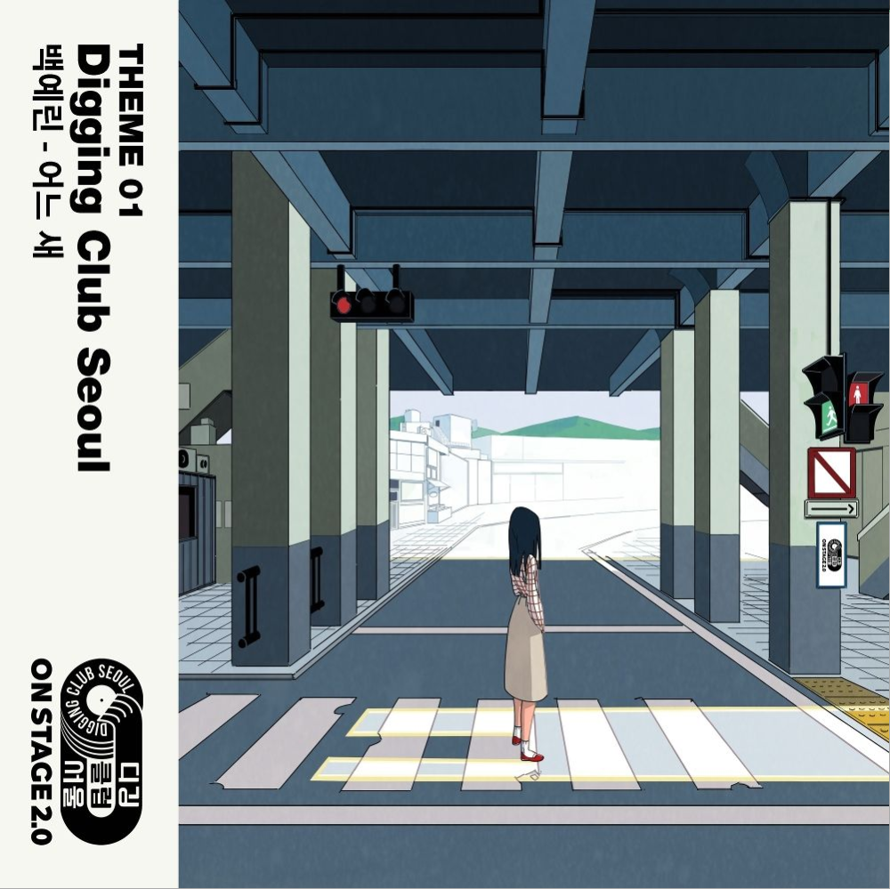
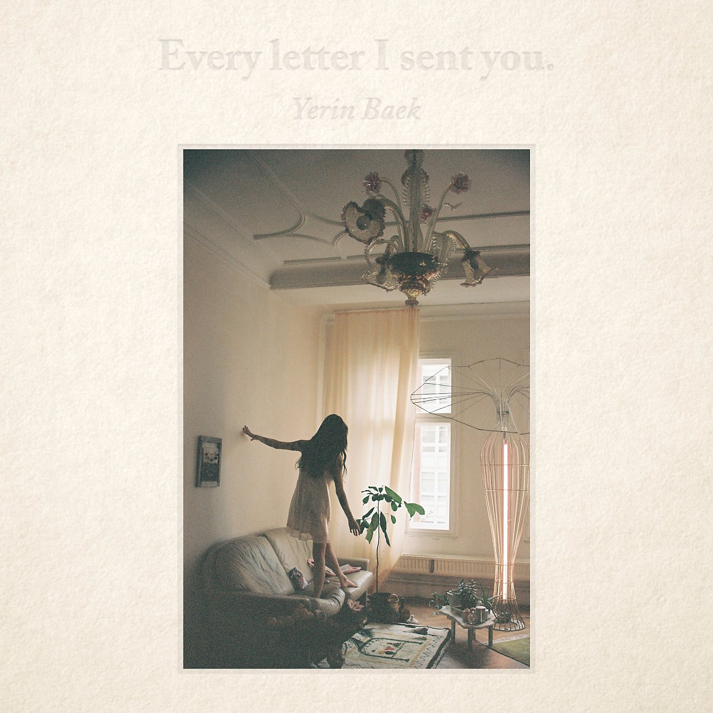

백예린이 11월30일 첫 번째 솔로 앨범 [FRANK]를 발표했다. 2012년 박지민과 함께 '15&'로 데뷔한 백예린은 어린 나이임에도 불구하고 뛰어난 가창력과 감정 표현으로 '믿고 듣는 가수'라는 수식어를 거머쥐었다. 솔로 앨범 [FRANK]에서는 전곡 작사-작곡에 참여하며, 차세대 싱어송라이터로서의 가능성까지 드러냈다. 또한 자켓 사진과 뮤직비디오에도 자신의 감성을 담기 위해 직접 콘셉트를 구상하는 등 많은 공을 들였다.
솔로 앨범의 제목인 [FRANK]에는 '숨김 없는', '솔직한'이란 뜻이 담겨있다. 백예린은 이에 걸맞게 투명하고 진솔한 자신의 이야기를 음악으로 풀어냈다. 메모장에 적어 놓은 문구, 과거의 기억과 현재의 나에 대한 생각의 조각을 맞추며 써 내려간 가사를 통해 백예린을 둘러싸고 있는 세상을 그려냈다. [FRANK]는 열아홉 소녀 백예린의 마음 속에 담긴 우주는 어떤 빛깔인지 엿볼 수 있는 앨범이 될 것이다.
타이틀곡 "우주를 건너"는 백예린과 프로듀서 '구름'이 함께 작업한 곡이다. '우주'라는 공간이 가지고 있는 신비로우면서도 공허한 느낌을 음악으로 표현했다. 과학만으로는 전부 설명할 수 없는 우주와 말로는 다 표현할 수 없는 사람의 감정 사이에서 공통점을 찾아, 전에 없던 독특한 감성의 곡을 완성했다. 백예린은 일차원적인 사랑과 이별을 넘어, 너와 나의 공간 그리고 그 사이에 존재하는 미묘함에 대해 노래한다. |
|
'감성 음색 여신' '백예린'이 디지털 싱글 [Bye bye my blue]로 돌아온다.
[Bye bye my blue]는 '백예린'이 "우주를 건너"에 이어 두 번째로 선보이는 디지털 싱글로, 동명의 타이틀곡 "Bye bye my blue"를 포함해 "그의 바다", "Zero" 총 세 곡이 수록돼 있다.
지난해 발매와 동시에 음원 차트를 휩쓸었던 "우주를 건너" 이후 7개월 만에 발표하는 이번 앨범에서 '백예린'은 특히 그녀만의 감성이 가득 담긴 자작곡 2곡을 함께 수록해 뮤지션으로서 한층 성장한 모습을 유감없이 발휘할 예정이다.
또 '백예린'은 특유의 감성적인 음색을 바탕으로 '여성적 화법'과 '섬세한 작곡 실력'까지 모두 잡으며 차세대 음원 강자로서의 저력을 다시 한번 대중들에게 각인시킬 예정이다.
타이틀곡 "Bye bye my blue"는 부드러운 피아노 선율에 얹어진 '백예린'의 짙은 감성 보이스가 인상적인 R&B 곡으로, "우주를 건너"에서 함께한 '구름'과의 두 번째 협업으로 탄생했다. 특히 "많이 가져도 난 아직 너 같진 않아 아픈 기억들 위로 매일 혼자 걸어 난", "나의 나의 나의 그대여 이름만 불러봐도 맘이 벅차요" 등의 가사가 사랑에 대한 불안하고 애잔한 감정을 고스란히 전달한다.
편안하게 전개되는 잔잔한 멜로디에 뒤이어 후반부에는 파도가 휘몰아치는 듯한 느낌을 주는 "Bye bye my blue"는 '백예린' 특유의 섬세한 가사 전달력과 호소력 짙은 음색이 곁들여지면서 마치 마음을 담아 꾹꾹 눌러쓴 손편지를 읽는 것처럼 감성 충만한 곡으로 완성됐다. |
|
Love you on Christmas
2016.12.07
|
Our love is great
2019.03.18
|
백예린이 직접 작사 작곡한 크리스마스 송을 발표한다.
백예린은 7일 'Love you on Christmas'와 'November song', 2곡이 담긴 디지털 싱글을 선보인다.
뛰어난 가창력과 음악 표현력, 또 특별한 감성으로 대중들에게 인정을 받아오고 있는 백예린인 만큼 이번 크리스마스를 맞이하는 신곡들에 대한 기대감도 높아질 것으로 전망된다.
또 이번 노래 두 곡 모두 백예린이 작사 작곡 모두에 나서며 아티스트 뮤지션으로서의 능력도 또 한번 발휘했다.
'Love you on Christmas'는 특별한 누군가와 함께 보내 더 행복한 날임을 표현한 곡. 크리스마스라는 날에 대한 백예린 표 감성으로 표현해낸 노래다. 'November song'은 사랑이 듬뿍 담겨진 곡으로 겨울에 대한 백예린의 낭만을 담아냈다.
올 상반기 'Bye bye my blue'로 큰 사랑을 받은 백예린이 다가오는 연말 들려줄 감성 높은 크리스마스 송, 연말을 맞이하는 대중들에게 감미롭고 특별한 선물이 될 것이다. |
|
백예린이 2019년 3월 18일 두 번째 솔로 미니앨범 'Our love is great'를 발매한다.
디지털 싱글 '우주를 건너', 'Bye bye my blue'로 독보적인 음색과 음악적 감정선을 선사했던 백예린이 다시 한 번 소중하고 섬세한 마음을 전한다. 'Our love is great'는 2015년 11월 발매한 첫 미니앨범 'FRANK' 이후 두 번째로 선보이는 디지털 미니앨범이자, 2016년 12월 발매한 크리스마스 시즌송 'Love you on Christmas' 이후 2년 3개월 만에 솔로 행보를 담은 앨범.
새 앨범 'Our love is great'에는 타이틀곡 '그건 아마 우리의 잘못은 아닐 거야'를 비롯해 총 7트랙이 수록된다. 백예린은 앨범 전곡 작사, 작곡에 이름을 올리며 본인만의 음악 세상을 아름답고 서정적으로 표현했다.
타이틀곡 '그건 아마 우리의 잘못은 아닐 거야'는 '관계 안에서 서로 의도치 않게 피어난 불안함은 우리 잘못이 아니며, 결국 그것은 우리를 더 크게 만들어 줄 것'이라는 심오한 메시지를 담았다. 백예린은 듣는 이의 마음을 유영하는 듯한 영롱한 멜로디 속에서 고운 음색을 드러내며 감미로운 분위기를 완성했다.
1번 트랙 '야간비행 (魔女の花)'은 백예린이 영화 '마녀와 메리의 꽃'을 보고 영감을 받고, 영화에 대한 해석을 덧대어 완성한 노래. 영화에서 등장하는 ‘야간비행’이라는 푸른 꽃은 툭하면 실수만 하는 보잘것없는 아이이면서도, 메리에게 하룻밤 사이 특별한 힘을 주는 꽃으로 등장한다. 백예린은 자신도 누군가에게 그런 힘이 담긴 꽃을 찾아 주고 싶다는 마음을 담아 '야간비행'을 작사, 작곡했다.
'Dear my blue'는 소중한 사람이 슬퍼할 때 자신이 할 수 있는 일 중에 가장 진실된 방법으로 위로하기 위해 만든 곡. 피아노 선율과 백예린의 목소리 단 두 가지의 심플한 구성만으로도 충분한 울림을 선사한다.
'Our love is great'는 사랑하는 사람들과 같이 연주하기 위해 수록한 곡. 백예린은 황홀하고 낭만적인 무드 속에서 본인의 모습, 곁을 함께한 소중한 사람들을 노래한다.
'내가 날 모르는 것처럼 (Feat. 카더가든)'은 기존에 사운드 클라우드를 통해 공개한 곡을 정식 음원으로 선보이는 것이며 '내가 느끼고 있는 감정이 어떤 것인지, 감히 들춰보아도 되는 것인지 잘 모르겠는 마음'을 이야기한다.
'지켜줄게'는 백예린이 '세상에서 지켜주고 싶은 모든 것, 무언가를 지켜주고 싶은 모든 사람들이 들어줬으면 하는 마음'을 담아 노래했다. 백예린은 가사에 가장 친한 친구, 나랑 아무 상관없이 지나가는 고양이, '다시 만날 수 있을까' 싶은 시골에 있는 강아지들, 고가도로에 삐져나온 꽃, 푸른 잎사귀 등을 보고 느꼈던 마음들을 눌러 담아 '순수한 사랑'을 표현했다.
'내가 날 모르는 것처럼 (2019 ver.)'은 기존 곡에서 백예린의 파트만 살린 버전으로 새롭게 편곡했다. 오롯이 백예린의 목소리만으로 꽉 채워 기존의 곡과는 또 다른 느낌을 전한다.
'Our love is great'에서 백예린은 탁월한 음악적 오브제 선택을 통해 수려한 곡 전개를 펼친다. 여기에 순수한 목소리로 진실된 감성을 전달하며 '결국은 사랑과 늘 함께 해온 내 주변과 내 모습들'에 대한 시선을 노래한다.
|
|

온스테이지 디깅클럽서울 THEME 01
2019.06.19
|

Every letter I sent you.
2019.12.10
|
백예린 그리고 원곡 프로듀서 김현철의 만남
자신만의 컬러가 담긴 보이스와 음악으로 사랑을 받고 있는
독보적인 뮤지션 백예린이 온스테이지 디깅클럽서울 2019의 첫 번째 주인공입니다.
장필순 1집의 프로듀서이자 연주자, 작곡가인 김현철이
연주로 참여해 더욱 풍부한 사운드를 더했습니다.
21세기 뮤지션 백예린의 코멘트
“제가 노래를 오래 한 것은 아니지만, 목소리 안에는 여러 실제 성격과 소스들이 합쳐져 소리를 이룬다고 생각하는데 장필순 선생님의 목소리를 듣고 그 안에서 제가 감히 조금이나마 닮은 부분이 있다는 생각이 들어, 선생님 노래를 부르면 많은 분들이 더 좋아하시지 않을까 하는 마음으로 노래를 해보았습니다! 김현철 선생님이 연주로 참여해주신단 연락을 먼저 주셔서 너무 놀랐어요! 저를 알고 계시는 것도 신기했고, 정말 좋은 곡들을 세상에 많이 들려주신 선생님이시니까. 제가 정말 열심히 긴장하고 해야겠다고 생각했어요.”
|
|
이번 앨범은 19살부터 23살까지 제 생각과 고민, 추억들이 담겨있어요. 정확한 주소가 있진 않았지만 꾸준히 제 마음을 곡에 담아 부치곤 했는데, 이제 여러분들에게 정말로 보낼 수 있게 되어 기쁘네요! 그 동안 저의 성장을 지켜봐 주시고 애정해주신 분들께 감사하는 마음을 담았습니다.
사랑을 담아, 예린 올림.
-
Every letter I sent you.
This album reflects memories, dilemmas, and thought processes I had from when I was nineteen to twenty three. With no specific address, I’ve been mailing my feelings in form of songs. And I’m really glad that I can finally mail them to you all. This album is my way of thanking everyone who has been loving me and supporting my journey as a musician.
Lots of love
Yerin
|
|